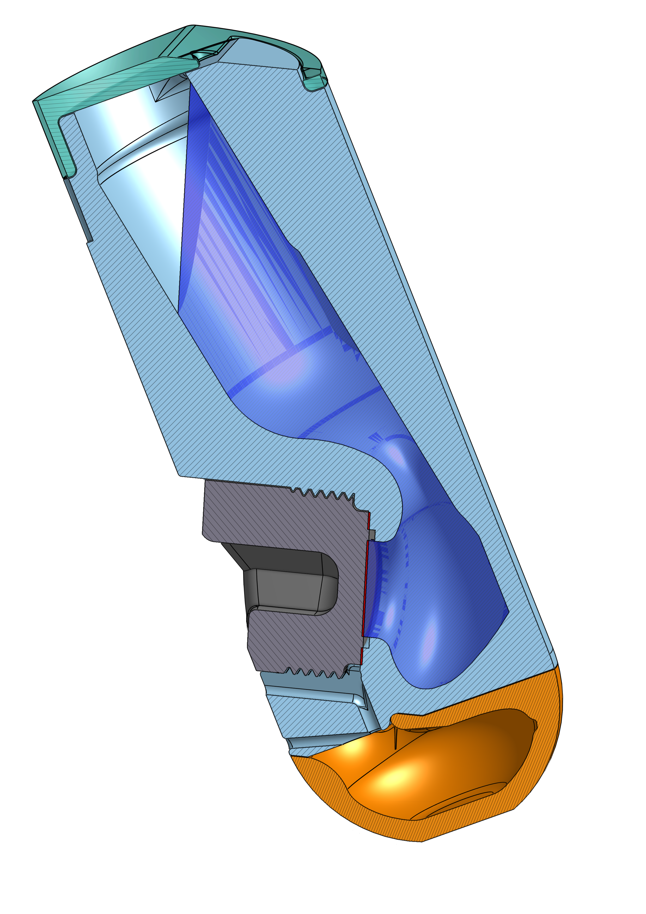

Cartridge description
The CentrivaLab 94/25 is an orthogonal centrifugal membrane filter (O-CMF) cartridge that converts rotor speed directly into transmembrane pressure without external pumps. The membrane is oriented orthogonally to the centrifugal acceleration field so that pressure acts normal to the membrane surface, thereby minimising concentration polarisation.
The CentrivaLab 94/25 is intended for use in fixed-angle centrifuge rotors accommodating standard round-bottom centrifuge tubes of 94 mL, with a rotor angle of approximately 25°. The reference rotor is the Sigma fixed-angle rotor 12159 (6 × 94 mL, 25°, maximum speed 15 500 rpm).
The radial coordinates used throughout this specification are the membrane radius rm, the free-surface radius rs(V), and the rotor-imposed maximum liquid radius rmax. Their definitions and the cartridge geometry are shown in Figure 1.

Intrinsic characteristics
Centrifugal pressure model. The transmembrane pressure generated at rotor angular velocity ω is
Δp = ½ ρ ω² ( rm² − rs² )
where the radial positions of the membrane (rm) and of the liquid free surface (rs) are referred to the rotor outer radius rmax via two cartridge-geometry constants and the fill volume V:
rm = rmax − δm rs = rmax − ( δs* + αV )
| Parameter | Value |
|---|---|
| Nominal feed volume | 22.5 mL |
| Operating fill range | 21.5–22.5 mL |
| Membrane chamber volume | 5.5 mL |
| Membrane coupon diameter | 20 mm |
| Effective membrane area | 1.45 cm² |
| Membrane offset (δm) — distance rmax − rm | 0.0268 m |
| Free-surface intercept (δs*) — distance rmax − rs at V = 0 | 0.02384 m |
| Free-surface slope (α) — rate at which rs moves toward the axis as V increases | 0.001315 m mL−1 |
The linear form δs = δs* + αV is a local linearisation, valid across the 21.5–22.5 mL operating range. Over wider fill ranges use the measured curve below.
Measured free-surface correlation
The free surface in a centrifugal field is an equipotential cylinder, not a plane, so rs(V) is not exactly linear. The curve below was fitted to nine measurements of the cartridge geometry spanning 7.4–22.8 mL. Across that span a straight line leaves 1.10 mm of systematic residual; the quadratic leaves 0.47 mm.
Free-surface offset. With δs in millimetres and V in millilitres:
δs(V) = 18.7197 + 2.03995 V − 0.022293 V², rs(V) = rmax − δs(V)
Valid for V ∈ [7.4, 22.8] mL. δs is intrinsic to the cartridge, so the same coefficients apply to every ~25° rotor; only rmax changes.
Operating at constant transmembrane pressure
Because the relation is invertible, a target Δp can be held while the rotor speed is varied, by setting the fill volume accordingly. Solving the pressure model for rs and then the quadratic for V:
rs = √( rm² − 2Δp / ρω² )
V = [ −B + √( B² − 4C(A − δs) ) ] / 2C
with A = 18.7197, B = 2.03995, C = −0.022293 and δs = rmax − rs, all in millimetres.
This decouples transmembrane pressure from the acceleration field at the membrane (am = ω²rm), which sets the mass-transfer coefficient through kc ∝ am1/3. At 10 bar in a Sigma 12159 the calibrated window spans 7 700–15 200 rpm, a 1.6× range in kc at fixed Δp. Note that changing the fill volume also changes the volume-to-area ratio and the height of the liquid column, so this is not a pure crossflow analogue. The CP simulator performs this calculation for any rotor.
Operating conditions per rotor
Applying the centrifugal pressure model (see Intrinsic characteristics above) at nominal fill volume (22.5 mL of water at 20 °C), the rotor speed required to reach each target transmembrane pressure is given below. Dashes indicate conditions exceeding the rotor speed limit.
| Δp (bar) | Sigma 12159 ★ 6×94 mL · 25° · 15 500 rpm |
Thermo F15-6×100y 6×100 mL · 25° · 15 000 rpm |
Sigma 12155 4×94 mL · 26° · 20 000 rpm |
Beckman FX6100 / JA-10.100 6×100 mL · 25° · 10 200 rpm |
Beckman VF 6.94 6×94 mL · 25° · 10 000 rpm |
|---|---|---|---|---|---|
| 2 | 3 443 | 3 443 | 3 672 | 3 443 | 3 227 |
| 5 | 5 444 | 5 444 | 5 807 | 5 444 | 5 103 |
| 10 | 7 699 | 7 699 | 8 212 | 7 699 | 7 217 |
| 15 | 9 430 | 9 430 | 10 057 | 9 430 | 8 839 |
| 20 | 10 889 | 10 889 | 11 613 | — | — |
| 30 | 13 336 | 13 336 | 14 223 | — | — |
| 40 | 15 397 | — | 16 424 | — | — |
| 50 | — | — | 18 362 | — | — |
| Max Δp | 40.5 bar | 38.0 bar | 59.3 bar | 17.6 bar | 19.2 bar |
★ Reference rotor. rm and rs are the radial positions of the membrane and liquid free surface, respectively. Model assumes pure water at 20 °C; correct for solvent density as needed.
Compatible fixed-angle rotors
All confirmed fixed-angle rotors at ~25° accommodating 94–100 mL round-bottom (Oak Ridge) tubes. rmax values derived from published RCF/RPM data.
| Manufacturer | Rotor model | Tubes | Angle | Max speed | rmax (mm) | Compatible centrifuges |
|---|---|---|---|---|---|---|
| Sigma | 12159 ★ | 6 × 94 mL | 25° | 15 500 rpm | 98 | Sigma 3-18KS, 3-30KS / 3-30KHS |
| Thermo Scientific | FiberLite F15-6×100y | 6 × 100 mL | 25° | 15 000 rpm | 98 | Sorvall ST 16R, Multifuge X3R, Legend XTR, Megafuge 16R, Eppendorf 5810R / 5804R |
| Sigma | 12155 | 4 × 94 mL | 26° | 20 000 rpm | 91 | Sigma 3-18KS, 3-30KS / 3-30KHS |
| Beckman Coulter | FX6100 | 6 × 100 mL | 25° | 10 200 rpm | 98 | Allegra X-12R, X-14R, X-15R |
| Beckman Coulter | JA-10.100 | 6 × 100 mL | 25° | 10 200 rpm | 98 | Avanti J-15R |
| Beckman Coulter | VF 6.94 | 6 × 94 mL | 25° | 10 000 rpm | 106 | Allegra V-15R |
★ Reference rotor used for the pressure model in this specification. Exact operating conditions depend on rotor geometry; verify rmax before use with other rotors.
Materials & chemical compatibility
Acrylic resin
Suitable for aqueous feeds in standard NF and RO screening workflows.
PEEK / PAEK / PPS
Recommended for OSN applications and solvent-oriented workflows requiring broad chemical compatibility.
Research use statement: CentrivaLab is a commercial brand of TalentGround Lda, Lisbon, Portugal. CentrivaLab products are intended for research and process development use only and are not intended for clinical or diagnostic use.